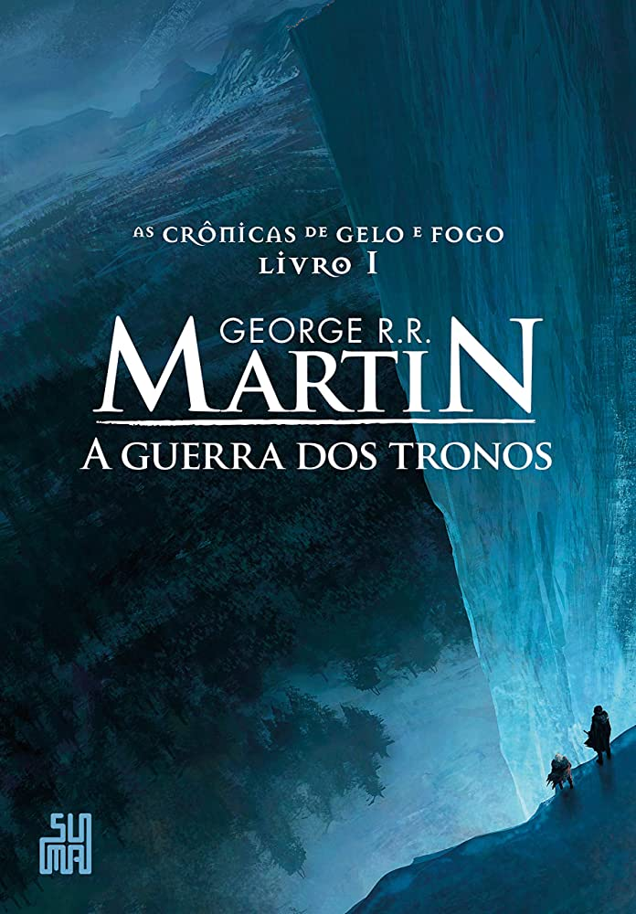
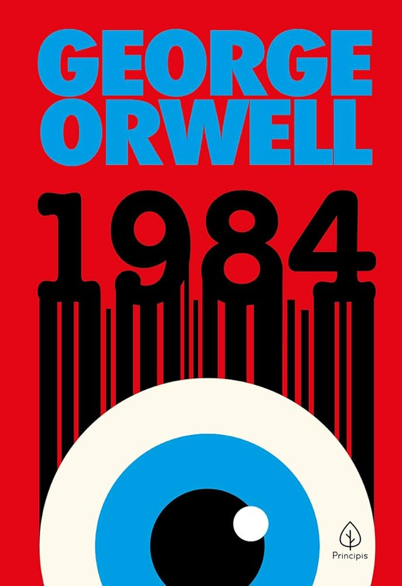

A Game of Thrones
Nas florestas ao norte de Winterfell, forças sobrenaturais se espalham por trás da Muralha que protege a região. E, nas Cidades Livres,
o jovem Rei Dragão exilado na Rebelião de Robert planeja sua vingança e deseja recuperar sua herança de família: o Trono de Ferro de Westeros.

1984
1984 mostra uma futura realidade distópica ocorrida no ano de 1984. Nessa realidade, a Inglaterra é comandada por um regime totalitarista em que todos são vigiados pelo Grande Irmão.
Winston Smith, protagonista da narrativa, questiona o poder vigente. O romance, publicado em 1949, está associado ao modernismo inglês.

Senhor dos Aneis
A história narra o conflito contra o mal que se alastra pela Terra-média, através da luta de várias raças - Humanos, Anãos, Elfos, Ents e Hobbits - contra Orques, para evitar que o "Anel do Poder" volte às mãos de seu criador Sauron, o Senhor Sombrio.

Harry Potter e a Pedra Filosofal
A narrativa que inicia a saga Harry Potter conta a história de um menino bruxo que fica órfão, depois que o vilão Voldemort assassina seus pais a sangue frio.
O garoto se torna uma lenda no mundo mágico por ter sobrevivido ao feitiço mortal apenas com uma cicatriz na testa, mesmo sendo apenas um bebê.